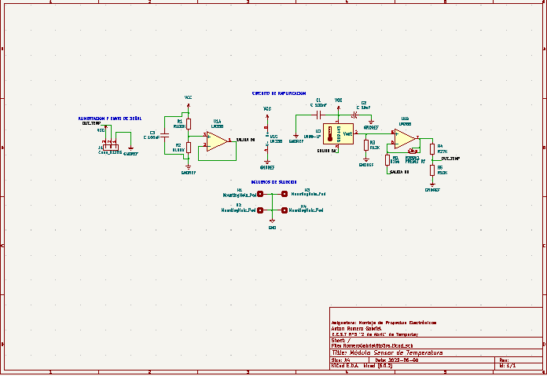
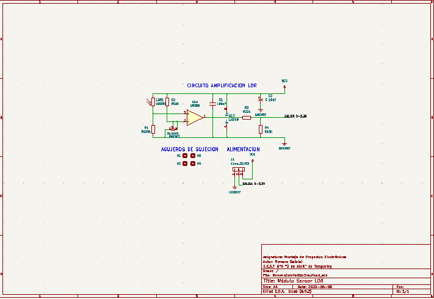

De qué se trata?
Este proyecto consiste en el control inteligente vía internet, tambien conocido como IoT (Internet of things). Un sistema de internet de las cosas incluye diversos elementos, comenzando con los dispositivos físicos que interactúan con el mundo real. Estos dispositivos incluyen sensores (que recolectan datos como temperatura, humedad, medidas eléctricas, videos, etc.) y actuadores (que permiten tomar acciones como abrir válvulas o encender motores, entre otros). Además de esto cuenta con un sotware para poder controlar las cosas que se le conecten a distancia.
Placa principal


Esta placa consiste en una serie de cuatro relays, controlados por la placa de desarrollo ESP32. Estos relays son los actuadores, a los cuales se conectan el o los dispositivos que se desea controlar a través de WIFI. Para esto, el microcontrolador se conecta a una base de datos para poder obtener la informacion de la nube que se necesita, en este caso se utilizó Firebase para hacerlo. Ademas de esto la placa cuenta con dos borneras para poder incorporar un sensor de iluminación y otro de temperatura.
Esquematico de la placa principal:

Esquematico del modulo de temperatura:
Esquematico del modulo de iluminación:
Aplicaciones
Domótica
La domótica refiere a las tecnologías que se orientan al control y la automatización inteligente de la vivienda. La app que se hizo fue pensada para poder controlar los dispositivos conectados activandolos o desactivandolos de forma manual o automaticamente, controlados, en este caso, mediante los sensores de temperatura e iluminación conectados.
DESCARGAR APPSemaforo IoT
En este caso se aplico el proyecto a un semaforo, el cual se controla por una opcion que prende y apaga las luces de forma manual o de forma autamatica indicandole el tiempo que se necesita que cada luz este prendida.
DESCARGAR APP